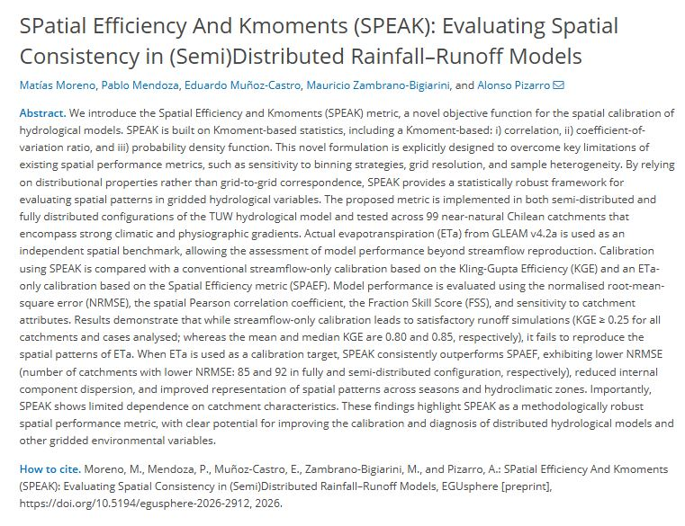

View all publications
View all publications Google Scholar
Google Scholar
SPatial Efficiency And Kmoments (SPEAK): Evaluating Spatial Consistency in (Semi)Distributed Rainfall–Runoff Models
2026EGUsphere preprint; discussion started 05 June 2026

Citation
Moreno, M.; Mendoza, P.; Muñoz-Castro, E.; Zambrano-Bigiarini, M.; Pizarro, A. (2026). SPatial Efficiency And Kmoments (SPEAK): Evaluating Spatial Consistency in (Semi)Distributed Rainfall–Runoff Models. EGUsphere [preprint]. https://doi.org/10.5194/egusphere-2026-2912
https://doi.org/10.5194/egusphere-2026-2912Abstract
This study introduces SPEAK, a Kmoment-based objective function for spatial calibration of hydrological models. Tested with semi-distributed and fully distributed TUW model configurations across 99 near-natural Chilean catchments, the metric uses GLEAM evapotranspiration as an independent spatial benchmark. The results show lower normalised error, improved spatial-pattern representation and limited dependence on catchment characteristics compared with SPAEF.